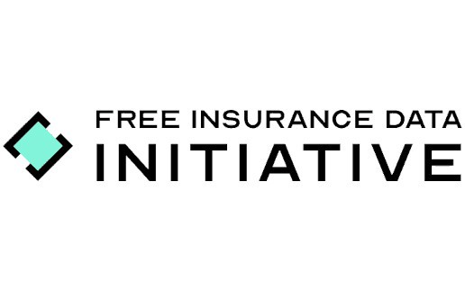

Die Analyse
Marktentwicklungen, Technologien und Anbieter, geprüft und für die Entscheidungspraxis eingeordnet. Mit Quellenangabe und benannten offenen Fragen statt Zukunftsprosa.
Das VersicherungsTech Magazin ist ein unabhängiges digitales Fachmedium für KI, Automatisierung und digitale Technologien in der Versicherungsbranche des deutschsprachigen Raums.
Bevor wir über Formate und Reichweite sprechen, zeigen wir, wer hier arbeitet und wer wofür die Verantwortung trägt.


Zwischen Produktankündigungen, Panel-Zitaten und Pilotprojekt-Meldungen geht oft unter, was eine Entwicklung für die Versicherungspraxis tatsächlich bedeutet. Genau dort setzen wir an: Wir beobachten den Markt, prüfen Behauptungen und ordnen ein, was danach noch trägt.
Vier Schritte, immer in dieser Reihenfolge. Was sich nicht belegen lässt, wird als offen benannt oder erscheint nicht.
Wir sichten laufend Marktmeldungen, Anbieterlandschaft und Fachdiskussion im deutschsprachigen Raum und sammeln, was für die Praxis relevant werden könnte.
Behauptungen gleichen wir mit Quellen, Gesprächen und eigener Recherche ab. Unsicherheiten verschweigen wir nicht, wir schreiben sie hin.
Wir bewerten, was eine Entwicklung für Versicherer konkret bedeutet: Aufwand, Nutzen, offene Fragen. Auch dann, wenn das Ergebnis ernüchternd ausfällt.
Beiträge erscheinen im Magazin, im Newsletter und im Podcast. Redaktionelle und bezahlte Inhalte bleiben dabei strikt getrennt.
Bezahlte Inhalte tragen bei uns immer einen sichtbaren Hinweis. Die redaktionelle Bewertung ist nicht käuflich, auch nicht für Partner.
Sponsored Content · Kennzeichnung nach §6 TMG-Logik
Marktentwicklungen, Technologien und Anbieter, geprüft und für die Entscheidungspraxis eingeordnet. Mit Quellenangabe und benannten offenen Fragen statt Zukunftsprosa.
Entscheiderinnen und Entscheider der Branche im Gespräch über Strategien, Projekte und das, was nicht funktioniert hat.

Der Podcast unseres Netzwerks: wöchentliche Gespräche über Versicherung und Technologie, jeden Montag.
Sie müssen bewerten, welche Technologie eine Investition rechtfertigt. Wir liefern die unabhängige Einordnung dazu.
Wir versprechen Sichtbarkeit im Fachpublikum. Leads, Abschlüsse oder Vertriebserfolge versprechen wir ausdrücklich nicht.
Vier Kennzahlen, jede mit Quelle und Stand. Mehr behaupten wir nicht.
35.000
Podcast-Downloads pro Monat über den Insurance Monday Podcast, das Audio-Format unseres Netzwerks.
Quelle: Hosting-Auswertung Insurance Monday · Stand: 08/2026
≈ 50 %
Öffnungsrate des Newsletters
Quelle: Versandsystem · Stand: 08/2026
20.000+
LinkedIn-Follower im Team-Netzwerk
Quelle: LinkedIn-Teamprofile · Stand: 08/2026



Fragen zur Redaktion, ein Themenhinweis oder Interesse an einer Zusammenarbeit: Maximilian Hempel antwortet persönlich, ohne Umweg über ein Formular.
info@versicherungstech-magazin.de